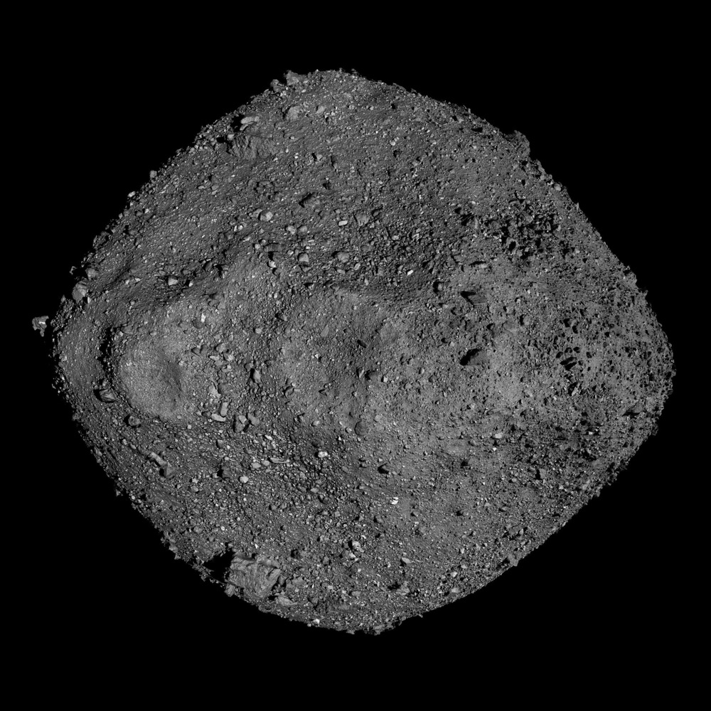
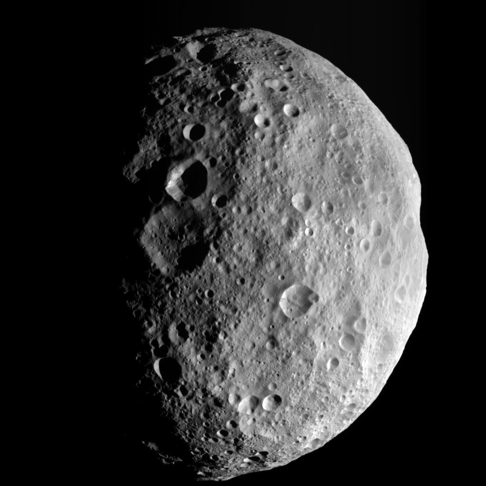
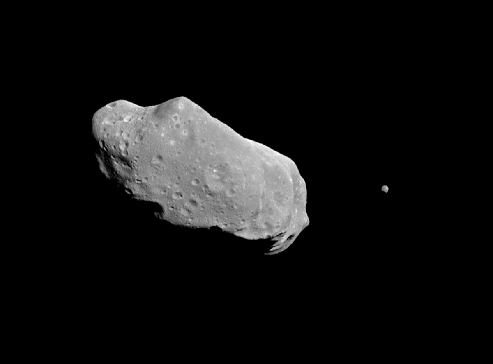

Rocky and metallic worlds too small to become planets, drifting through the solar system since its very beginning.
Asteroids are rocky, metallic leftovers from the birth of the solar system 4.6 billion years ago — too small and lumpy to be planets. The one at right, Bennu, is a 490-metre rubble pile that NASA's OSIRIS-REx sampled and flew back to Earth in 2023.

Asteroids are building material left over from planet formation. Here's how the belt got left behind.
A vast cloud of gas and dust collapses under its own gravity.
Most matter forms the Sun; the rest flattens into a rotating disk.
Dust sticks into pebbles, boulders, then planet-sized clumps.
Between Mars and Jupiter, Jupiter's gravity blocks a planet from forming — leaving the belt.
Most asteroids orbit in the main belt between Mars and Jupiter. Despite the movies, it's mostly empty space — every asteroid combined wouldn't even equal our Moon.
Its largest resident, Ceres, is round enough to count as a dwarf planet.
The belt sits between Mars and Jupiter — mostly empty space, not a crowded field.
Asteroids fall into three broad compositional families, based on how sunlight reflects off their surfaces.
The most common type — about 75% of known asteroids. Dark, carbon-rich, and largely unchanged since the solar system formed. Bennu is a C-type asteroid.
About 17% of asteroids. Made of silicate rock and nickel-iron metal. Brighter than C-types and common in the inner asteroid belt.
A smaller group made mostly of nickel-iron metal, likely fragments of the cores of larger bodies that broke apart in ancient collisions.
Two of the best-studied asteroids — one a battered mini-world, one with a moon of its own.

NASA / JPL-Caltech / UCLA / MPS / DLR / IDAThe belt's second-most-massive body — and differentiated, with a metallic core, mantle, and crust like a tiny planet.

NASA / JPLA 56-km main-belt asteroid famous for the speck to its right — Dactyl, the first moon ever found orbiting an asteroid.
Drag the slider to resize an asteroid and see how it stacks up against familiar objects — from a person to the entire Earth.
Asteroid diameter
Pick an asteroid and something familiar, from a person to a skyscraper, and see exactly how they measure up side by side.